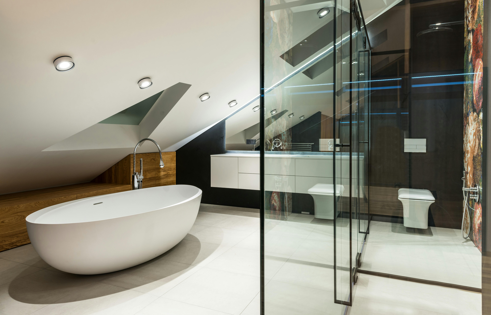

Carpenters for Housing Reform Victoria
Industry-led reform for renovation carpentry in Victoria — supporting builders, recognising trade experience, and improving housing delivery while builders remain responsible for new homes and major construction.
Supporting builders. Recognising carpenters. Strengthening housing delivery.
This initiative is focused on practical reform that maintains standards, protects consumers, and unlocks renovation capacity across Victoria.
Victorian Trades Supporting Reform
11
Support is growing among experienced Victorian carpenters and renovation trades.
Updated manually as support grows.

A practical reform idea built from real renovation experience in Victoria.
Experienced carpenters already manage renovation works, coordinate licensed trades, and deliver outcomes for clients every day. This initiative explores how the licensing system could better recognise that reality while keeping builders responsible for new homes and major construction.
Benefits for Victoria

Recognising experienced carpenters through a renovation-focused pathway could create practical benefits for the building industry, homeowners, and the broader Victorian economy.
- Helping address trade shortages. Allowing experienced carpenters to take responsibility for defined renovation work could increase the number of qualified professionals able to deliver smaller residential projects across the state.
- Supporting builders. Builders remain responsible for new homes, structural construction, and larger projects, while experienced carpenters could assist with the growing demand for renovation work.
- Improving housing delivery. Smaller renovation projects may be completed more efficiently, reducing bottlenecks and helping homeowners access qualified trades.
- Supporting the Victorian economy. More renovation work delivered by qualified tradespeople means more legitimate contracts, more declared income, and greater tax revenue flowing through the formal economy.
- More affordable outcomes for homeowners. With experienced carpenters able to coordinate defined renovation projects, homeowners may benefit from more accessible pricing and greater availability of skilled trades.
The goal is a system that works for everyone — builders, carpenters, homeowners, and the Victorian government.
Policy Proposal Summary
Problem
Victoria's domestic building threshold of approximately $10,000 no longer reflects the real cost of renovation work. Many common projects such as bathrooms, kitchens and decks now exceed this value, yet experienced carpenters who manage these projects cannot formally take responsibility without becoming licensed builders.
Proposed Solution
Introduce a Registered Residential Carpenter pathway recognising experienced carpenters with significant renovation experience, allowing them to take responsibility for defined renovation projects within clear regulatory limits.
Outcome
A clearer pathway for experienced tradespeople, improved delivery of smaller residential projects, reduced industry bottlenecks, and stronger recognition of the practical role carpenters already play in renovation construction.
The Proposed Trade Pathway
The goal of this reform is not to replace builders, but to introduce a clearly defined pathway recognising highly experienced carpenters operating in the renovation sector.
Carpentry apprenticeship completed
10+ years experience
Renovation focused projects
New homes
Structural construction
Major developments
Why the $10,000 Threshold No Longer Reflects Renovation Reality
The $10,000 threshold was designed when smaller renovation projects could reasonably fall within that value. Today, however, the cost of materials, labour, and compliance means that many basic renovation projects exceed this threshold.
- Bathroom renovations commonly range from $20,000–$40,000
- Kitchens can range from $25,000–$70,000
- Decks and outdoor structures often exceed $10,000
- Internal renovations regularly surpass $15,000
As a result, most real-world renovation projects now fall into a regulatory category designed for larger construction works, even when the project is primarily carpentry-led.
Housing Impact
A renovation-focused pathway could help smaller residential projects move more efficiently while maintaining strong standards, approvals, and consumer protections.
Current Industry Reality
Across Victoria, many experienced carpenters already coordinate renovation projects, manage trades such as plumbers and electricians, and oversee day-to-day site work.
Despite this, the current licensing structure does not provide a clear pathway for experienced carpenters to take formal responsibility for defined renovation projects.
Experience Requirements
Any Registered Residential Carpenter pathway should apply only to highly experienced tradespeople with significant on-site knowledge of residential construction and renovation work.
- Minimum of 10+ years experience in the carpentry trade
- Completion of a carpentry apprenticeship
- Demonstrated experience managing renovation projects
- Understanding of building compliance and permit requirements
- Coordination of licensed trades such as plumbing and electrical
Why Reform Is Needed
Victoria’s domestic building regulations generally require a registered builder to contract residential building work valued above approximately $10,000. While designed to protect consumers, this threshold no longer reflects the reality of modern renovation costs.
Today many common renovation projects regularly exceed this value:
- Bathroom renovations: $20,000 – $40,000
- Kitchens: $25,000 – $70,000
- Decks and outdoor structures: $15,000+
- Internal renovations: often above $15,000
Experienced carpenters frequently coordinate these projects, manage licensed trades, and oversee site progress, yet the current regulatory system does not provide a clear pathway recognising that responsibility.
A renovation-focused pathway would recognise experienced carpenters already working in this space while maintaining the essential role of registered builders in delivering new homes and structural construction.
Important Clarification
This initiative is not intended to replace licensed builders or alter the responsibilities of builders for new homes, structural construction, or multi-storey developments.
The focus is strictly on exploring a renovation-focused pathway for experienced carpenters within clearly defined limits.
The Problem in Numbers
The current domestic building threshold no longer reflects the real cost of renovation work in Victoria.
In practice, this means many common renovation jobs now exceed the threshold, even when they are primarily carpentry-led projects already managed by experienced tradespeople on site.

Industry Voice
“Experienced carpenters already carry out much of this work across Victoria. A clearly defined pathway would recognise those skills while maintaining standards.” — Victorian Carpenter

How Other States Approach Trade Licensing
Other Australian states recognise trade contractor licensing systems that allow qualified tradespeople to take responsibility for specific categories of building work.
For example, Queensland operates a trade contractor licensing framework through the QBCC where carpenters and other trades can hold their own licences and contract work within defined scopes.
Exploring a renovation-focused pathway for experienced carpenters in Victoria could achieve similar recognition while maintaining the essential role of registered builders in leading new homes and major structural construction.
How Other States Approach Trade Licensing
Other Australian states recognise trade contractor licensing systems that allow qualified tradespeople to take responsibility for specific categories of building work.
For example, Queensland operates a trade contractor licensing framework through the QBCC where carpenters and other trades can hold their own licences and contract work within defined scopes.
Exploring a renovation-focused pathway for experienced carpenters in Victoria could achieve similar recognition while maintaining the essential role of registered builders in leading new homes and major structural construction.
The Renovation Economy
Renovation work is a major part of Victoria’s residential construction activity, yet the current regulatory structure does not clearly recognise experienced carpenters who already coordinate much of this work on site.
In practice, this means a large share of real renovation work now sits above the current threshold, even when the project is primarily carpentry-led and already being coordinated by experienced tradespeople.
How Other States Approach Trade Licensing
Other Australian states recognise trade contractor licensing systems that allow qualified tradespeople to take responsibility for specific categories of building work.
For example, Queensland operates a trade contractor licensing framework where carpenters and other trades can hold their own licences and contract work within defined scopes.
Exploring a renovation-focused pathway for experienced carpenters in Victoria could achieve similar recognition while maintaining the essential role of registered builders in leading new homes and major structural construction.
Proposed Division of Responsibility
Clear boundary (important)
This pathway is renovation-focused. It is not intended to cover new-home framing or new home construction.
Builders remain responsible for:
- All new homes (site-built or factory-built)
- All new-home framing and structural builds
- Extensions and major structural alterations
- Multi-storey builds, complex projects, residential developments
Registered Residential Carpenters could lead (renovation-focused):
- Bathrooms, laundries, kitchens (renovation coordination)
- Window and door upgrades / replacement
- Internal fit-off carpentry (doors, trim, hardware, finish carpentry)
- Decks / pergolas / verandas (where applicable)
- Small granny flats / studios up to 30 m² (single storey)
- Repair / rectification carpentry works within defined limits
Plumbing/electrical by licensed trades. Engineering sign-off where required. Approvals obtained where required. Clear scope and limits to manage risk and protect consumers.
Timing Matters
Victoria is currently undergoing significant building industry reform, including the establishment of the Building and Plumbing Commission and new consumer protection legislation.
As government and industry work together to strengthen the residential construction system, there is an opportunity to explore practical improvements that reflect how building projects already operate on site.
Carpenters for Housing Reform Victoria aims to contribute to that conversation by proposing a renovation-focused pathway that supports builders, recognises experienced carpenters, and improves housing delivery across the state.
Founder
Founded by Daniel Sonsie, Victorian Carpenter. This initiative welcomes constructive input from carpenters, builders, regulators, and industry organisations across Victoria.
Early industry support is currently being gathered from experienced Victorian carpenters working in residential renovation and construction.
Industry Support
Carpenters for Housing Reform Victoria is gaining early support from experienced carpenters across the state who believe the renovation sector needs a clearer pathway recognising trade experience.
- Victorian renovation carpenters
- Residential carpentry contractors
- Trades coordinating renovation projects
- Builders supporting practical reform
Support is currently being gathered through the website and will continue to grow as more industry professionals engage with the proposal.
Support the Reform
Carpenters for Housing Reform Victoria is inviting constructive support and feedback from experienced carpenters, builders, and other industry professionals across the state.
Join the initiative
If you support exploring a renovation-focused pathway for experienced carpenters in Victoria, use the button below to open the support form.
Contact
Email: admin@sonsiecarpentry.com